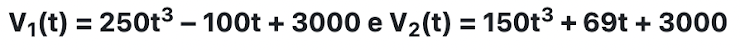

Enunciado: Um laticínio possui dois reservatórios de leite. Cada reservatório é abastecido por uma torneira acoplada a um tanque resfriado. O volume, em litros, desses reservatórios depende da quantidade inicial de leite no reservatório e do tempo t, em horas, em que as duas torneiras ficam abertas. Os volumes são dados pelas funções da imagem abaixo. Depois de aberta cada torneira, o volume de leite de um reservatório é igual ao do outro no instante t = 0. Utilizando JavaScript e HTML, crie uma página com um botão que será responsável por chamar a função que determina em qual outro instante t esse volume dos reservatórios será igual. O valor obtido deve ser adicionado a um elemento < p > no seu HTML. Dica: simplifique o polinômio para uma equação de segundo grau a ser resolvida no seu código JavaScript. Coloque seu código no JSFIddle ou Repl.it e adicione o endereço na resposta.

Enunciado: Um resistor de 10 Ω no qual flui uma corrente elétrica de 3,0 ampères está associado em paralelo com outro resistor. Sendo a corrente elétrica total, na associação, igual a 4,5 ampères, calcule o valor do segundo resistor utilizando JavaScript. Insira um botão na página HTML que chame a função JavaScript responsável por calcular e exibir o resultado em um elemento < p > do HTML. Coloque seu código no JSFIddle ou Repl.it e adicione o endereço na resposta.